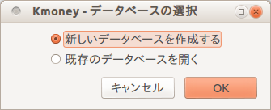
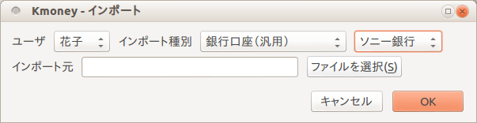
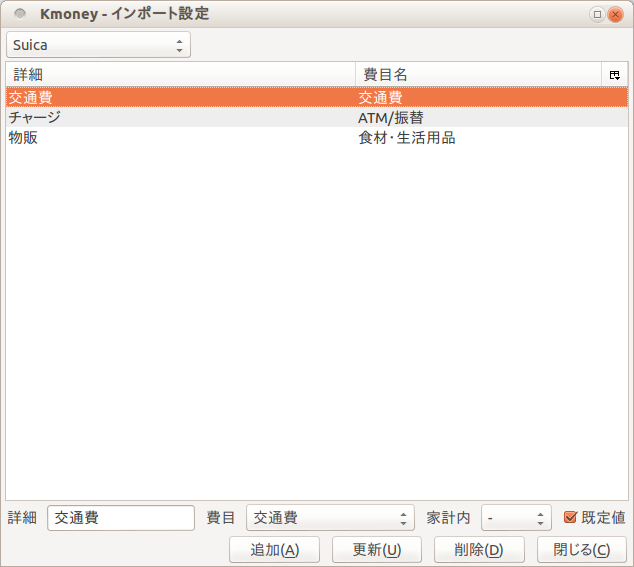
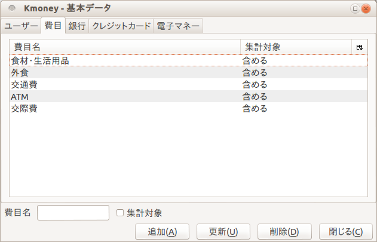

Kmoney/PCの使い方
初期設定
データーベースファイルの作成

はじめて起動した時は、新しいデータベースを作成するか既存のデータベースを開くかを選択するダイアログが表示されます。「新しいデータベースを作成する」を選択し、データベースファイルを作ってください。
基本データの入力
新しく作られたデータベースには、ユーザー名、費目、銀行名などのデータがあらかじめ数件入っています。メニューバーの「設定」ー「基本データ」で変更してお使いください。詳しくは「基本データの設定」で説明します。
データの入力
 日々の支出や収入は、「現金明細」「銀行口座明細」「クレジットカード明細」「電子マネー明細」のいずれかのタブを開いて入力します。
日々の支出や収入は、「現金明細」「銀行口座明細」「クレジットカード明細」「電子マネー明細」のいずれかのタブを開いて入力します。
追加
画面の下のほうにある「日付」や「費目」を入力し、「追加」ボタンを押してください。上の表に入力内容が追加されます。
更新
入力内容を変更したい場合、表から変更したい行を選択してください。下のフィールドにその行の内容が表示されます。その内容を変更して「更新」ボタンを押してください。
複数行を一括して更新したい場合、表で複数選択して右クリックし、「更新」の下から項目を一つ選んでください。表示されたダイアログで更新内容を入力し、OKボタンを押すと、選択行のデータが更新されます。
削除
入力したデータを削除したい場合、その行を表から選択して「削除」ボタンを押してください。
複数行を一括して削除したい場合、表で複数選択して右クリックし、「削除」を選んでください。
リセット
入力した日付や金額を取り消したい場合は「リセット」ボタンを押してください。この場合にはデータは更新されません。
「家計内」
銀行口座から現金を引き出した時や、電子マネーをチャージした時などは、「家計内」の選択リストから「自己」を指定してください。
家族とのあいだでお金を受け渡した時は、「家計内」の選択リストから「家族」を指定してください。
これらのデータは「集計」タブのグラフに表示するデータから除外されます。
支払い月
クレジットカードでの買い物をレシートから入力する場合、「支払い月」は空欄にしてください。あとで利用明細をみて「支払い月」を追加入力できます。
表示データの絞り込み
明細タブでは、表には先々月以降のデータだけが表示されています。この条件は表の上にある選択リストで変更できます。
インポート

メニューバーの「ファイル」ー「インポート」により、ウェブ上で取得できる銀行口座の入出金明細やクレジットカードの利用明細をインポートすることができます。
入力ファイル
現在対応している入力ファイルは以下の通りです。
- 銀行
- みずほ銀行の入出金明細(ofxファイル)
- 新生銀行の入出金明細(csvファイル)
- クレジットカード
- UCカードの利用明細(csvファイル)
- セゾンカード(ウォルマートカード)の利用明細(csvファイル)
- ビューカードの利用明細(HTMLファイル)
- 電子マネー
- Suica(HTMLファイル)
- 他アプリ
- かんたん家計簿(エクスポートしたデータベースファイル)
上記以外の場合でも、汎用の形式で入力されていればインポートできます。インポートファイル仕様書をご覧ください。
インポート設定

メニューバーの「設定」ー「インポート設定」で、インポートのルールを設定することができます。
銀行のファイルで、取引内容が「キュウヨ」となっている場合に費目を「給与」としたい場合、インポート設定ダイアログで「詳細」欄に「キュウヨ」と入力し、費目の選択リストから「給与」を選択します。
一つのインポート元について「既定値」のチェックボックスをONにしたデータを必ず一つ作ってください。ほかのルールに当てはまらないデータは全て「既定値」として設定された費目のデータとしてインポートされます。
インポートされたデータの調整
レシートから入力したデータとインポートしたデータが重複してしまう場合もあります。インポート後にメニューバーの「データ」ー「重複行を表示」を選択すると、日付と金額が同じデータだけが表示されます。重複しているデータの一方を削除してください。
基本データの設定

ユーザ
「ユーザー」タブでは家族の名前を入力してください。
費目
「費目」タブで費目を設定します。「集計対象」をチェックすると、その費目は「集計」タブの全費目のグラフを表示するときに集計対象となります。銀行口座からのクレジットカードの引き落しなどはここで集計対象外としてください。集計対象にしてしまうと二重計上が発生してしまいます。
すでにデータがある費目を削除しようとした場合、データの移行先を選択するダイアログが表示されます。例えば「電話」という費目を削除するとき、移行先として「通信費」を選択すると、費目が「電話」になっていたデータは「通信費」のデータになります。
集計／収支
「集計」タブで月々の費目ごとの収支を見ることができます。
表の上にある選択リストを使い、費目やユーザで絞り込むこともできます。
「グラフ」を選択すると、特定の費目の収支がグラフとして表示されます。
収支
「収支」タブでは、特定の銀行口座の収支をグラフで表示します。
表示される金額は指定期間の累積です。例えば2012年1月から10月を指定した場合、3月のところに表示される金額は1月から3月までの累積の収支です。
資産
「資産」タブは、貯蓄や負債を表示します。
現金明細か銀行口座明細で、表から特定の行を選択して右クリックすると、「資産として入力」というメニュー項目が表示されます。これを選択すると「資産」タブに移動し、選択行の内容が画面下のフィールドに表示されます。
個人の資産なら「種別」の選択リストで「個人」、家族の資産なら「家族」を選択してください。
「追加」ボタンでそのデータが資産として入力されます。
オプション設定
メニューバーの「設定」ー「オプション」で設定を変更できます。
起動時に前回と同じデータベースを開きたい場合、「メイン」タブの「最後に利用したデータベースを開く」をチェックしてください。
明細タブで更新や削除を実行するとき、確認ダイアログが出ないようにしたい場合、「プロンプト」タブの「レコードの更新・削除」のチェックを外してください。
クレジットカードや電子マネーを使わない方は、「表示」タブの「クレジットカード」や「電子マネー」のチェックを外してください。